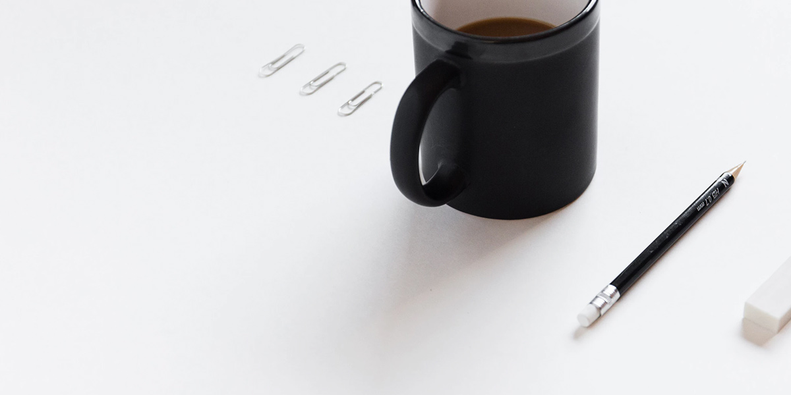
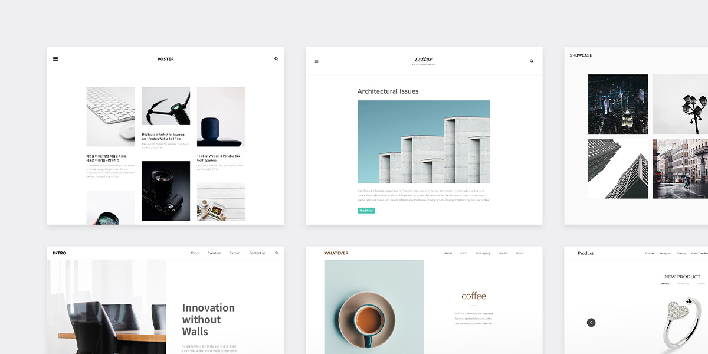

환영합니다!
#1 글을 작성하고 블로그를 관리해보세요.

님의 회원 가입을 진심으로 축하합니다. 이 글은 비공개로 작성돼 있습니다.
'편집'으로 내용을 바꾸시거나, 삭제 후 '새 글을 작성'하셔도 됩니다.
글 뿐만 아니라 블로그의 각종 설정을 변경할 수도 있습니다. '블로그관리'를 확인해보세요.
#2 다양한 스킨이 있어요.

티스토리에 있는 다양한 '스킨'도 살펴 보세요.
블로그나 사이트를 사용하는 목적에 맞게 스킨을 고를 수 있습니다.
어떤 이야기를 주로 하실 건가요? 잘 생각해 보시고, 마음에 드는 스킨을 고르세요.
'스킨 편집'을 통해 다양한 커스텀, 그리고 홈 꾸미기를 적용하실 수도 있답니다.
#3 포럼에서 사람들과 소통하세요.
마지막으로 사용하시다가 티스토리에 대해 궁금한 내용이 있다면 '포럼'을 확인하세요.
찾기 어려울 땐 직접 질문을 해보는 건 어떨까요? 친절한 티슷터 분들이 바로 답변해 줄 거에요.